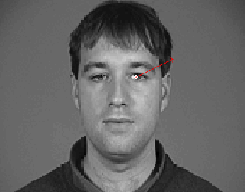
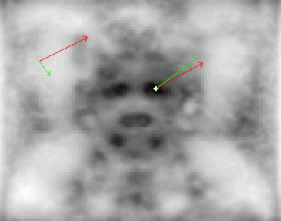

TrainingAn appearance-based model of the pattern of interest (in this case, an eye) is encoded as a vector of Gabor responses.This realistically involves averaging over a certain number of subjects (the training set). More generally, response vectors from the images in the training set could be used to train a classifier. |
 |
|  |
SearchWhen looking from the pattern on a new image, a Gabor feature vector is extracted at each point.The vector is compared against the model. The resulting distance map is expected to have a minimum at the location of the pattern we are looking for, were the feature vector best resembles the model. Here again, the distance map could represent the output of a classifier rating each image pixel. |
This common algorithm as it stands is therefore ill-suited for active vision applications.